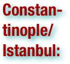

Armenian Genocide: Terms
Please scan the terms to find what you are looking for - they are not in order!

.pdf (. . . )


Armenian people or Armenians are a nation and ethnic group native to the Caucasus and the Armenian Highland. The largest concentration is in Armenia having a nearly-homogeneous population with 97.9% or 3,145,354 being ethnic Armenian. Because of wide-ranging and long-lasting diaspora, an estimated total of 3 million people of full or partial Armenian ancestry live outside of Armenia. (wikipedia.org)


The Ottoman Empire or Sublime Ottoman State was an empire that lasted from 27 July 1299 to 29 October 1923. At the height of its power, in the 16th and 17th centuries, it controlled territory in southeastern Europe, southwestern Asia, and North Africa (see List of Ottoman Empire dominated territories). The Ottoman Empire contained 29 provinces and numerous vassal states, some of which were later absorbed into the empire, while others were granted various types of autonomy during the course of centuries.With Constantinople as its capital city,and vast control of lands around the eastern Mediterranean during the reign of Suleiman the Magnificent (ruled 1520 to 1566), the empire was at the center of interactions between the Eastern and Western worlds for six centuries. The Ottoman Empire came to an end, as a regime under a caliphate, on November 1, 1922.It formally ended, as a de jurestate, on July 24, 1923, under the Treaty of Lausanne. The Republic of Turkey, which was officially proclaimed on October 29, 1923, became one of the successor states of the Ottoman Empire with the Treaty of Lausanne signed on July 24, 1923. (wikipedia.org)


The Assyrian Genocide (also known as Sayfo or Seyfo) refers to the mass slaughter of the Assyrian/Chaldean/Syriac population of the Ottoman Empire during the First World War. The Assyrian population of northern Mesopotamia (the Tur Abdin, Hakkari, Van, Siirt regions of present-day southeastern Turkey and the Urmia region of northwestern Iran) was forcibly relocated and massacred by Ottoman (Turkish) and Kurdish forces between 1914 and 1920. Estimates on the overall death toll have varied. Contemporary reports placed the figure at 270,000. More recent estimates have revised that figure to as between 500,000 and 750,000. The Assyrian genocide took place in the same context as the Armenian and Pontic Greek genocides. In these events, close to three million Christians of Syriac, Armenian or Greek Orthodox denomination were murdered by the Young Turks regime.Since the "Assyrian genocide" took place within the context of the much more widespread Armenian genocide, historical scholarship treating it as a separate event is scarce. In 2007, the International Association of Genocide Scholars reached a consensus that "the Ottoman campaign against Christian minorities of the Empire between 1914 and 1923 constituted a genocide against Armenians, Assyrians, and Pontian and Anatolian Greeks." The President of Genocide Watch endorsed the "repudiation by the world's leading genocide scholars of the Turkish government's ninety-year denial of the Ottoman Empire's genocides against its Christian populations, including Assyrians, Greeks, and Armenians." (wikipedia.org)


During World War I and its aftermath (1914–1923), the government of the Ottoman Empire instigated a violent campaign against the Greek population of the Empire. The campaign included massacres, forced deportations involving death marches, and summary expulsions. According to various sources, several hundred thousand Ottoman Greeks died during this period. Some of the survivors and refugees, especially those in Eastern provinces, took refuge in the neighboring Russian Empire. After the end of the 1919–22 Greco-Turkish War, most of the Greeks remaining in the Ottoman Empire were transferred to Greece under the terms of the 1923 population exchange between Greece and Turkey. The government of Turkey, the successor state to the Ottoman Empire, maintains that the large-scale campaign was triggered by the perception that the Greek population was sympathetic to the enemies of the Ottoman state. The Allies of World War I took a different view, condemning the Ottoman government-sponsored massacres as crimes against humanity. More recently, the International Association of Genocide Scholars passed a resolution in 2007 affirming that the Ottoman campaign against Christian minorities of the Empire, including the Greeks, was genocide. Some other organizations have also passed resolutions recognizing the campaign as a genocide, as have the parliaments of Greece, Cyprus and Sweden. (wikipedia.org)


The Armenian Genocide—also known as the Armenian Holocaust, the Armenian Massacres and, by Armenians, as the Great Crime —refers to the deliberate and systematic destruction of the Armenian population of the Ottoman Empire during and just after World War I. It was implemented through wholesale massacres and deportations, with the deportations consisting of forced marches under conditions designed to lead to the death of the deportees. The total number of resulting Armenian deaths is generally held to have been between one and one and a half million.Other ethnic groups were similarly attacked by the Ottoman Empire during this period, including Assyrians and Greeks, and some scholars consider those events to be part of the same policy of extermination. It is widely acknowledged to have been one of the first modern genocides, as scholars point to the systematic, organized manner in which the killings were carried out to eliminate the Armenians, and it is the second most-studied case of genocide after the Holocaust. The word genocide was coined in order to describe these events. The starting date of the genocide is conventionally held to be April 24, 1915, the day that Ottoman authorities arrested some 250 Armenian intellectuals and community leaders in Constantinople. Thereafter, the Ottoman military uprooted Armenians from their homes and forced them to march for hundreds of miles, depriving them of food and water, to the desert of what is nowSyria. Massacres were indiscriminate of age or gender, with rape and other sexual abuse commonplace. The majority of Armenian diaspora communities were founded as a result of the Armenian genocide. The Republic of Turkey, the successor state of the Ottoman Empire, denies the word genocide is an accurate description of the events (see Denial of the Armenian Genocide). In recent years, it has faced repeated calls to accept the events as genocide. To date, twenty countries have officially recognized the events of the period as genocide, and most genocide scholars and historians accept this view. (wikipedia.org)


The modern Armenian diaspora was formed largely after the First World War as a result of the regional wars at that time, which was the centrally-planned extermination of the indigenous Armenian population of the Ottoman Empire during the First World War. Those Armenians who survived and fled to different parts of the world (approximately half a million in number) created new Armenian communities far from their native land. Through marriage and procreation, the number of Armenians in the diaspora who trace their lineage to those Armenians who survived and fled the Armenian Genocide is now several million. Since the breakup of the Soviet Union, approximately one million Armenians from Armenia have joined the Armenian diaspora largely as a result of difficult economic conditions in Armenia. Today, the Armenian diaspora refers to communities of Armenians living outside the Republic of Armenia, the Republic of Nagorno-Karabakh, and the Javakhk region of Georgia, since these regions form part of Armenians' indigenous homeland. The total Armenian population living worldwide is estimated to be 11,000,000. Of those, approximately 3,300,000 live in Armenia, 140,000 in the unrecognized majority-Armenian Republic n autonomous republic within Soviet Azerbaijan) and 120,000 in region of Javakhk in neighboring Georgia. This leaves approximately 7,000,000 in diaspora (with the largest populations in Russia, the United States, France, Argentina, Lebanon, Syria, Iran, Canada, Ukraine, Greece, and Australia). Only one-third of the world's Armenian population lives in Armenia, and their pre-World War I homeland six times that of present-day Armenia, including the eastern regions of Turkey, northern part of Iran, southern part of Georgia, Nagorno-Karabakh and Nakhijevan regions of Azerbaijan. (wikipedia.org)


The denial of the Armenian Genocide is the assertion that the Armenian Genocide did not occur in the manner or to the extent described by scholarship. Denial of the Armenian Genocide is forbidden in some countries. The Armenian Genocide is widely acknowledged by genocide scholars to have been one of the first modern, systematic genocides, as many Western sources point to the sheer scale of the death toll as evidence for a systematic, organized plan to eliminate the Armenians.The Republic of Turkey, as well as the Republic of Azerbaijan, do not accept that the Ottoman authorities attempted to exterminate the Armenian people. Turkish government acknowledges that during World War I many Armenians died, but counters that Muslim Turks died as well, and claims that the number of Armenian victims has been inflated, and that massacres were committed by both sides as a result of inter-ethnic violence and the wider conflict of World War I. (wikipedia.org)


Armenia, or Armenistan, became a province of the Ottoman Empire under Selim II (1524–1574). Armenia remained under Ottoman rule for three centuries, until after the Russo–Turkish War (1828–1829), when Eastern Armenia was ceded to the Russian Empire. Western Armenia remained under Ottoman rule until the Ottoman Empire itself fell in World War I. (wikipedia.org)


Constantinople was the imperial capital of the Roman Empire, the Byzantine/Eastern Roman Empire, the Latin Empire and the Ottoman Empire. Throughout most of the Middle Ages, Constantinople was Europe's largest and wealthiest city. Since at least the tenth century, the city was commonly referred to as Istanbul which derives from the Greek Istimbolin, meaning "in the city" or "to the city". After the Ottoman conquest of 1453, the official name of Constantinople was retained in official documents and coinage. Not until the creation of the Republic of Turkey did the Turkish government formally object to the name, and ask that others use the more common name for the city. (wikipedia.org)


The Armenian Apostolic Church is the world's oldest National Churchand is one of the most ancient Christian communities. Armenia was the first country to adopt Christianity as its official religion in 301 AD, in establishing this church. The Armenian Apostolic Orthodox Church traces its origins to the missions of Apostles Bartholomew and Thaddeus in the 1st century. (wikipedia.org)


The Armenian Catholic Church is an Eastern Catholic Churchsui juris in union with the other Eastern Rite, Oriental Rite and Latin Rite Catholics who accept the Bishop of Rome as spiritual leader of the Church. It is regulated by Eastern canon law. Since 1749, the Armenian Catholic Church has been headquartered at the Armenian Catholic Patriarchate complex in Bzoummar, Lebanon. (wikipedia.org)


The Armenian Evangelical Church was established on July 1, 1846 by thirty-seven men and three women in Constantinople. These reformists faced strong retaliation from the Armenian Patriarchate of Constantinople. Eventually, after Patriarch Matteos Chouhajian excommunicated the reformists, they were forced to organize themselves into a separate religious community, the Protestant Millet. This separation led to the formation of the Armenian Evangelical Church in 1846. Today, there are close to a 100 Armenian Evangelical Churches in the following countries: Argentina, Armenia, Australia, Belgium, Brazil, Bulgaria, Canada, Cyprus, Egypt, England, France, Georgia, Greece, Iran, Iraq, Lebanon, Syria, Turkey, Uruguay, and the United States of America. (wikipedia.org)


A dhimmi (. . . "the people of the dhimma or people of the contract") is a non-Muslim subject of a state governed in accordance with sharia law. Linguistically, the word means "one whose responsibility has been taken". This has to be understood in the context of the definition of state in Islam, which is different from the current definition of citizenship of a state. The dhimma is a theoretical contract based on a widely held Islamic doctrine granting special status to adherents of Judaism, Christianity, ("People of the Book") and certain other non-Muslim religions. Dhimma provides rights of residence in return for taxes. Dhimmi have fewer legal and social rights than Muslims, but more rights than other non-Muslims. They are excused from specifically Muslim duties, and otherwise equal under the laws of property, contract and obligation.Under sharia law, dhimmi status was originally afforded to Jews, Christians, and Sabians. The protected religions later came to include Zoroastrians, Mandaeans, Hindus and Buddhists. Eventually, the largest school of Islamic legal thought applied this term to all non-Muslims living in Islamic lands outside the sacred area surrounding Mecca, Saudi Arabia. (wikipedia.org)


Millet is a term for the confessional communities in the Ottoman Empire. It refers to the separate legal courts pertaining to "personal law" under which communities (Muslim Sharia, Christian Canon law and Jewish Halakha law abiding) were allowed to rule themselves under their own system. After the Ottoman Tanzimat (1839–76) reforms, the term was used for legally protected religious minority groups, similar to the way other countries use the word nation. The word Millet comes from the Arabic word millah (ملة) and literally means "nation". The Millet system of Islamic law has been called an early example of pre-modern religious pluralism. The concept was used for the communities of the Church of the East under the Zoroastrian Sassanid Persia in the 4th century before establishment of the Ottoman Empire. (wikipedia.org)


The term "Armenian Question" as used in European history, became common place among diplomatic circles and in the popular press after the Congress of Berlin; that in like Eastern Question, refers to powers of Europe's involvement to the Armenian subjects of the Ottoman Empire beginning with the Russo-Turkish War of 1877-78. However in specific terms, the Armenian question refers to the protection and the freedoms of Armenians from their neighboring communities. The "Armenian question" explains the forty years of Armenian-Ottoman history in the context of English, German, Russian politics between 1877-1914. The "Armenian Question", like the "Eastern Question", remained a factor (issue) in international politics, first with Great Britain and Germany; then Russia taking on the role of Ottoman Armenians protector (see protectorate of missions). (wikipedia.org)


The Tanzimât, meaning reorganization of the Ottoman Empire, was a period of reformation that began in 1839 and ended with the First Constitutional Era in 1876. The Tanzimât reform era was characterized by various attempts to modernize the Ottoman Empire, to secure its territorial integrity against nationalist movements and aggressive powers. The reforms encouraged Ottomanism among the diverse ethnic groups of the Empire, attempting to stem the tide of nationalist movements within the Ottoman Empire. The reforms attempted to integrate non-Muslims and non-Turks more thoroughly into Ottoman society by enhancing their civil liberties and granting them equality throughout the Empire. (wikipedia.org)


Autonomy (. . . "one who gives oneself their own law") is a concept found in moral, political, and bioethical philosophy. Within these contexts, it refers to the capacity of a rational individual to make an informed, un-coerced decision. In moral and political philosophy, autonomy is often used as the basis for determining moral responsibility for one's actions. One of the best known philosophical theories of autonomy was developed by Kant. In medicine, respect for the autonomy of patients is an important goal of deontology, though it can conflict with a competing ethical principle, namely beneficence. Autonomy is also used to refer to the self-government of the people. (wikipedia.org)


The Hamidian massacres, also referred to as the Armenian Massacres of 1894–1896, refers to the massacring of Armenians and Assyrians by the Ottoman Empire, with estimates of the dead ranging from 80,000 to 300,000, and at least 50,000 orphans as a result. The massacres are named for Abdul Hamid II, whose efforts to reinforce the territorial integrity of the embattled Ottoman Empire reasserted Pan-Islamism as a state ideology. Abdul Hamid believed that the woes of the Ottoman Empire stemmed from "the endless persecutions and hostilities of the Christian world." He perceived the Ottoman Armenians to be an extension of foreign hostility, a means by which Europe could "get at our most vital places and tear out our very guts." One of the most serious incidents occurred in Armenian-populated parts of the Armenian Highlands and Anatolia. Although the Ottomans had prevented other revolts in the past, the harshest measures were directed against the Armenian community. They observed no distinction between the nationalist dissidents and the Armenian population at large, and massacred them with brutal force. This occurred at a time when the telegraph could spread news around the world and the massacres were extensively covered in the media in Western Europe and the United States. (wikipedia.org)

The Young Turks were a coalition of various groups favoring reformation of the administration of the Ottoman Empire. The movement was against the absolute monarchy of the Ottoman Sultan and favored a re-installation of the short-lived Kanûn-ı Esâsî constitution. They established the second constitutional era in 1908 with what would become known as the Young Turk Revolution. (wikipedia.org)


The Young Turk Revolution of 1908 reversed the suspension of the Ottoman parliament by Sultan Abdul Hamid II, marking the onset of the Second Constitutional Era. A landmark in the dissolution of the Ottoman Empire, the Revolution arose from an unlikely union of reform-minded pluralists, Turkish nationalists, Western-oriented secularists, and indeed anyone who accorded the Sultan political blame for the harried state of the Empire. The Revolution restored the parliament, which had been suspended by the Sultan in 1878. However, the process of supplanting the monarchic institutions with constitutional institutions and electoral policies was neither as simple nor as bloodless as the regime change. The periphery of the Empire continued to splinter under the pressures of local revolutions. (wikipedia.org)


The Dissolution of the Ottoman Empire (24 July 1908 – 30 October 1918), included the watershed events of the Young Turk Revolution and the establishment of the Second Constitutional Era, and ended with the Partitioning of the Ottoman Empire by the victorious sides of World War I. (wikipedia.org)


The Adana massacre occurred in Adana Province, in the Ottoman Empire, in April 1909. A religious-ethnic clash in the city of Adana amidst governmental upheaval resulted in a series of anti-Armenian pogroms throughout the district. Reports estimated that the massacres in Adana Province resulted in 15,000-30,000 deaths.Turkish and Armenian revolutionary groups had worked together to secure the restoration of constitutional rule, in 1908. On 31 March (or 13 April, by the Western calendar) a military revolt directed against the Committee of Union and Progress seized Istanbul. While the revolt lasted only ten days, it precipitated a massacre of Armenians in the province of Adana that lasted over a month. The massacres were rooted in political, economic, and religious differences. The Armenian segment of the population of Adana was the "richest and most prosperous", and the violence included the destruction of "tractors and other kinds of mechanized equipment." The Christian-minority Armenians had also openly supported the coup against Sultan Abdul Hamid II, which had deprived the Islamic head of state of power. The awakening of Turkish nationalism, and the perception of the Armenians as a separatist, European-controlled entity, also contributed to the violence. (wikipedia.org)


The Middle Eastern theatre of World War I was the scene of action between 29 October 1914, and 30 October 1918. The combatants were the Ottoman Empire, with some assistance from the other Central Powers, and primarily the British and the Russians among the Allies of World War I. There were five main campaigns: the Sinai and Palestine Campaign, the Mesopotamian Campaign, the Caucasus Campaign, the Persian Campaign and the Gallipoli Campaign. There were the minor North African Campaign (World War I), the Arab Campaign and South Arabia Campaign. Besides the regular forces both sides used asymmetrical forces in the region. Participating on the Allied side were Arabs who participated in the Arab Revolt, and Armenian militia who participated in the Armenian Resistance. The Armenian volunteer units and Armenian militia formed the Armenian Corps of the Democratic Republic of Armenia in 1918. This theatre encompassed the largest territory of all the theaters of the war. The Russian participation ended with the Armistice of Erzincan (5 December 1917) and the revolutionary Russian government eventually withdrew from the war with the Treaty of Brest-Litovsk (3 March 1918). The Armenians attended the Trabzon Peace Conference (14 March 1918) and resulting with the Treaty of Batum on 4 June 1918. The Ottomans accepted the Armistice of Mudros with the Allies on 30 October 1918, and signed the Treaty of Sèvres on 10 August 1920 and later the Treaty of Lausanne on July 24, 1923. (wikipedia.org)


The Central Powers was one of the two sides that participated in World War I and was also known as the Triple Alliance, the other being the Triple Entente (Allied Powers). It was made up of the German Empire, the Austro-Hungarian Empire, the Ottoman Empire, and the Kingdom of Bulgaria. (wikipedia.org)


The Resistance at Van, was an insurgency against the Ottoman Empire's attempts to massacre the Armenian population in the vilâyet of Van.Several contemporaneous observers and later historians have pointed out that the Ottoman government deliberately instigated the armed Armenian Resistance by enforcing the conditions on their subjects and then used this insurgency as a main pretext to justify the forced deportations of Armenians from all over the empire. However, the decisions of deportation and extermination were made before the Van resistance. De Nogales' assessment substantiated the reports of the other witnesses who maintained that the Armenian posture at Van was defensive and an act of resistance to massacre. Based mostly in the city of Van, it was one of the few instances during the Armenian Genocide when Armenians fought against the Ottoman Empire's armed forces. The fighting lasted from 19 April to 17 May 1915, when the Ottoman army retreated as Russian forces approached the city. (wikipedia.org)


Red Sunday refers to the night when leaders of the Armenian community of the Ottoman capital, Constantinople, and later other centers were arrested and moved to two holding centers near Ankara by the Minister of the Interior Mehmed Talat Bey with his order of April 24, 1915. They were later deported, with the adoption of the Tehcir Law, on 29 May 1915. In the broader context of the Armenian Genocide, 24 April, Genocide Remembrance Day, commemorates the Armenian notables deported from the Ottoman capital in 1915, which was a precursor to the ensuing events. (wikipedia.org)


The Tehcir Law (tehcir in Turkish means "deportation"; official name Sevk ve İskân Kanunu "Dispatchment and Settlement Law") was passed by the Ottoman Parliament on May 27, 1915 and allegedly came into force on June 1, 1915, with publication in Takvim-i Vekayi, the official gazette of the Ottoman State. The temporary law expired on February 8, 1916. . . The Tehcir Law was part of the special measures against the Armenian population taken by the Ottoman Empire during World War I. This was coupled by a second set of order given to the "Special Organization" for the elimination of the evacuated population also including the alleged taking care of the vacated properties.Ottoman archives document that Armenian evacuation started as early as March 2. 1915.After the expiration of the "Tehcir Law" evacuation and massacres still followed. On 13 September 1915, the Ottoman parliament passed the "Temporary Law of Expropriation and Confiscation," stating that all property, including land, livestock, and homes belonging to Armenians, was to be confiscated by the authorities. (wikipedia.org)


Teşkîlât-ı Mahsûsa (. . . meaning Special Organization) was an Ottoman imperial governmentspecial forces unit under the War Department allegedly progenitor of the National Security Service, which was used to suppress Arab separatism and Western imperialism under Ottoman Empire. The main aim of Teşkîlât-ı Mahsûsa was to re-open the Ottoman Parliament. (wikipedia.org)


The Committee of Union and Progress (CUP) began as a secret society established as the "Committee of Ottoman Union" in 1889 by the medical students İbrahim Temo, Abdullah Cevdet, İshak Sükuti and Hüseyinzade Ali. It was transformed into a political organization by Bahaeddin Sakir aligning itself with the Young Turks in 1906, during the period of the dissolution of the Ottoman Empire. At the end of World War I most of its members were court-martialled by the sultan Mehmed VI and imprisoned. A few of the members of the organization were executed in Turkey after trial for the attempted assassination of Atatürk in 1926. Members who survived continued their political careers in Turkey as members of the Republican People's Party and in other political parties as well. (wikipedia.org)


"The Three Pashas", also known as the "dictatorial triumvirate", of the Ottoman Empire included the Ottoman minister of the interior, Mehmed Talat (1874–1921), the minister of war, Ismail Enver, (1881–1922) and the minister of the Navy, Ahmed Djemal, (1872–1922). As organizers of the Young Turks they were the dominant political figures in the empire during World War I. . . Western scholars hold that after the Coup of 1913, these three men became the de facto rulers of the Ottoman Empire until its dissolution following World War I. They were members of the Committee of Union and Progress a party with goals of creating a “Pan-Turkish”state which meant, in the words Enver Pasha, “relocating the dhimmi,” the non-Muslim population of the Ottoman Empire. These eventually resulted in the Armenian Genocide, killing 1.5 million Ottoman-Armenian citizens, and the Assyrian Genocide. The Three Pashas were principal players in the Ottoman-German Alliance and the Ottoman Empire's entry into World War I on the side of the Central Powers. (wikipedia.org)

Operation Nemesis is the Armenian Revolutionary Federation's code-name for a covert operation in the 1920s to assassinate the Turkish planners of the Armenian massacre (later known as the Armenian Genocide). Those involved with the planning and execution of the operation—including Shahan Natalie and Soghomon Tehlirian -- were survivors of the massacres. The Operation, between 1920–1922, killed many significant political and military figures of the Ottoman Empire, Internal affairs minister of Azerbaijan and some Armenians who were working against the Armenian cause. It is named after the Greek goddess of divine retribution, Nemesis. (wikipedia.org)

The Second Constitutional Era of the Ottoman Empire began shortly after Sultan Abdülhamid II restored the constitutional monarchy after the 1908 Young Turk Revolution. The period established many political groups. A series of elections during this period resulted in the gradual ascendance of the Committee of Union and Progress's ("CUP") domination in politics. The second biggest party Liberal Union (Ottoman Empire) ("LU") was in fact a coalition of parties led by Prince Sabahaddin. The constitutional era ended after World War I with the Occupation of Istanbul on 13 November 1918. The last meeting on March 18 produced a letter of protest to the Allies, and a black cloth covered the pulpit of the Parliament as reminder of its absent members. (wikipedia.org)


The Partitioning of the Ottoman Empire (30 October 1918 – 1 November 1922) was a political event that occurred after World War I. The huge conglomeration of territories and peoples formerly ruled by the Sultan of the Ottoman Empire was divided into several new nations.The partitioning was planned from the early days of the war, though the Ottoman Empire's opponents, called the Allies, disagreed over their contradictory post-war aims and made several dual and triple agreements. After the occupation of Istanbul by British and French troops in November, 1918, the Ottoman government collapsed completely and signed the Treaty of Sèvres in 1920. However, the Turkish War of Independence forced the former Allies to return to the negotiating table before the treaty could be ratified. The Allies and the Grand National Assembly of Turkey signed and ratified the new Treaty of Lausanne in 1923, superseding the Treaty of Sèvres and solidifying most of the territorial issues. One unresolved issue was later negotiated under the League of Nations (see Mosul (1925)). The partitioning brought the creation of the modern Arab world and the Republic of Turkey. The League of Nations granted France mandates over Syria and Lebanon and granted the United Kingdom mandates over Mesopotamia and Palestine (which was later divided into two regions: Palestine and Transjordan). Parts of the Ottoman Empire on the Arabian Peninsula became parts of what are today Saudi Arabia and Yemen. (wikipedia.org)